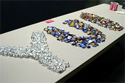

Yahoo! User Interface Library (YUI): Index of Library Examples
YUI Library: Index of Official Examples
Every YUI Library component ships with a series of 342 examples that illustrate its implementation. These examples can serve as starting points for your exploration of YUI, as code snippets to get you started in your own programming, or simply as an inspiration as to how various interaction patterns can be enabled in the web browser via YUI.
The navigation controls on the left side of this page allow you to explore these examples component-by-component; on this page you'll find the full index of library examples with a link to and short description of each one.
CSS Foundation
Base CSS | |
|---|---|
| Basic Test Suite for YUI Base | YUI Base CSS provides a consistent and legible rendering of HTML elements; this example gives you a straightforward look at how Base styles common HTML elements. |
| YUI Base, 750px | Base CSS and the full YUI CSS Foundation in a 750px-wide YUI CSS Grid. |
| YUI Base, 950px | Base CSS and the full YUI CSS Foundation in a 950px-wide YUI CSS Grid. |
| YUI Base, 974px | Base CSS and the full YUI CSS Foundation in a 974px-wide YUI CSS Grid. |
| YUI Base, 100% | Base CSS and the full YUI CSS Foundation in a 100%-of-page-width YUI CSS Grid. |
Fonts CSS | |
|---|---|
| Basic Test Suite for YUI Fonts | Put Fonts on a page to achieve consistent font-styling and line-height characteristics. |
| Setting the font size | Use percentages to specify font sizes when using YUI Fonts. |
| Setting the font family | Specify the font family you want and let YUI Fonts handle alternative fallback font-families. |
Grids CSS | |
|---|---|
| Page Width = 750px | Use Grids' preset page width of 750px. |
| Page Width = 950px | Use Grids' preset page width of 950px. |
| Page Width = 974px | Use Grids' preset page width of 974px. |
| Page Width = 100% | Use Grids' preset page width of 100%. |
| Custom Page Width | Specify an arbitrary page width. |
| Preset Template 1, 160px left | Use Grids' preset templates to put a 160px narrow column on the left side. |
| Preset Template 2, 180px left | Use Grids' preset templates to put a 180px narrow column on the left side. |
| Preset Template 3, 300px left | Use Grids' preset templates to put a 300px narrow column on the left side. |
| Preset Template 4, 180px right | Use Grids' preset templates to put a 180px narrow column on the right side. |
| Preset Template 5, 240px right | Use Grids' preset templates to put a 240px narrow column on the right side. |
| Preset Template 6, 300px right | Use Grids' preset templates to put a 300px narrow column on the right side. |
| Standard Nesting Grid (1/2 - 1/2) | The buiding block of nested grids is the Standard Nesting Grid which creates two evenly-wide child columns. Learn how in this example. |
| Special Nesting Grid "B" (1/3, 1/3, 1/3) | What you need an odd number of columns, or unevenly divided space, use Special Nesting Grids instead of Standard Nesting Grids. |
| Special Nesting Grid "C" (2/3, 1/3) | Create two uneven columns with this Special Nesting Grid. |
| Special Nesting Grid "D" (1/3, 2/3) | Create two uneven columns with this Special Nesting Grid. |
| Special Nesting Grid "E" (3/4, 1/4) | Create two uneven columns with this Special Nesting Grid. |
| Special Nesting Grid "F" (1/4, 3/4) | Create two uneven columns with this Special Nesting Grid. |
| Nested Standard Nesting Grids (1/4 - 1/4 - 1/4 - 1/4) | Create more than 2 (or 3) columns by nesting grids. This example shows a four-column even-width layout achieved by nesting Standard Nesting Grids inside of Standard Nesting Grids. |
| Using ARIA Landmark Roles With Grids | The ARIA Landmark Roles improve the accessibility of layouts created using Grids by allowing developers to more accurately communicate to users of screen readers the intended purpose of each section of a document or application. |
Reset CSS | |
|---|---|
| Basic Test Suite for YUI Reset | YUI Reset is the lowest-level member of YUI's CSS suite. It normalizes the rendering of HTML elements and provides a level playing field upon which to write CSS. |
YUI's Core JavaScript Components
Dom Collection | |
|---|---|
| Using setXY | Positioning elements relative to the document coordinate system can be quite a challenge. The Dom Utility provides this method to do it for you. |
| Using getXY | Getting element positions relative to the document coordinate system can be quite a challenge. The Dom Utility provides this method to do it for you. |
| Using setStyle | There are some differences between browsers regarding how style properties are set on HTMLElements. This method normalizes those for you. |
| Using getStyle | There are some differences between browsers regarding how style properties are retrieved from HTMLElements. This method normalizes those for you. |
| Using hasClass | This method allows you to test for the presence of a className on an HTMLElement. |
| Using addClass | This method allows you to add a className to an HTMLElement. |
| Using removeClass | This method allows you to remove a className from an HTMLElement. |
| Using getElementsByClassName | This method allows you select all of the HTMLElements on a given page that share a specific className. |
| Exploring the Dom Collection's API | The Dom Collection Explorer allows you to interact with some of the oft-used element-targeting functions in the YUI Dom Collection. |
Event Utility | |
|---|---|
| Simple Event Handling and Processing | Demonstrates simple event attachment and use of Event Utility to provide browser-neutral methods for acting on event objects. |
| Using Custom Events | Custom Events are an excellent way to publish and subscribe to interesting moments in your own scripts. |
| Using onAvailable, onContentReady, and onDOMReady | Event Utility gives you control over when you execute your scripts. In addition to the window's load event, Event Utility lets you know when an element is available, when its children are available, and when the page's full DOM is available. |
| Using Event Utility and Event Delegation to Improve Performance | Assigning events to parent elements allows you to listen for those same events on descendant elements, reducing the number of event listeners you need in your application. |
| Skinning via Progressive Enhancement using the Event Utility and the YUILoader | Using Progressive Enhancement to skin checkboxes with the help of the YUILoader and the Event Utility's "focus" and "blur" events and the "delegate" method. |
YAHOO Global Object | |
|---|---|
| Type-Checking Your Data | Use the YAHOO.lang type checking methods to deal with unpredictable data |
| User Agent Detection | YAHOO.env.ua can tell you with some accuracy which browser your page is being viewed in. |
Creating Class Hierarchies with YAHOO.lang.extend | Leverage class inheritance in an object-oriented architecture. |
Creating a Composition-Based Class Structure Using YAHOO.lang.augmentProto | Use YAHOO.lang.augmentProto to help modularize class behaviors. |
Add Behavior to Objects or Static Classes with YAHOO.lang.augmentObject | Use augmentObject to extend static classes, object literals, or class instances. |
Combining Simple Data Sets with YAHOO.lang.merge | Merge several objects, creating a unique set. |
YUI Utilities
Animation Utility | |
|---|---|
| Basic Animation | Creating and using a simple animation. |
| Animation Easing | The Animation Utility allows you to implement 'easing effects' — for example, when an animation gradually slows down as it nears completion, that's an easing effect known as 'ease-in'. This example shows you how to use easing effects with your animations. |
| Animating From a Given Value | Animations usually begin with the current value (e.g., a motion animation usually begins with the current position of the moving element). However, the starting position can be customized; this example shows you how. |
| Using Custom Units for an Animation | By default, animations are set in terms of a property's default units (often pixels or percent). This example shows you how to specificy custom units with Animation. |
| Animating Multiple Attributes | This example demonstrates how to animate multiple attributes of an HTMLElement. |
Chaining Animations Using onComplete | Animations can be chained (set to fire sequentially) using Animation's onComplete custom event; this simple example shows you how. |
| Animating Colors | Color animations can be effective indicators of state during the lifespan of a dynamic page. This example shows you how to animate color attributes of an HTMLElement. |
| Animating Motion | This example shows you how to animate the motion path of an HTMLElement. |
| Animating Along a Curved Path | This example explores motion animation by moving an HTMLElement along a curved path using control points. |
| Animated Scrolling | This example shows how to animate the scrolling of an HTMLElement. |
Browser History Manager | |
|---|---|
| Simple Navigation Bar | Use the Browser History Manager to "ajaxify" a simple navigation bar without compromising the use of the back/forward buttons. |
| TabView Control | The Browser History Manager is used here to remember which tabs have been visited. |
| Calendar Control | Go from month to month using the controls on the calendar widget and go back to previously viewed months using the browser's back button. |
| Multiple Modules | This example shows how to use the Browser History Manager with several modules on a page. |
Connection Manager | |
|---|---|
| Connection Manager GET Transaction | Uses Connection Manager to demonstrate an HTTP GET request. |
| Connection Manager POST Transaction | Explores the use of HTTP POST to send data to the server and retrieve the server's response. |
| Connection Manager Transaction Timeout | Connection Manager's built-in transaction timeout feature allows you to abort requests that are too slow in returning data. |
| Retrieving a Yahoo! Weather RSS Feed | Demonstrates how to retrieve XML data from a web service and make use of that information within the page. |
| Cross-Domain Transactions with Connection Manager | This example demonstrates a cross-domain request using the alternate Flash transport. |
| Subscribing to Connection Manager Global Events | Subscribe to Custom Events for an aspect-oriented approach to managing transactions and response data. |
| Subscribing to Connection Manager's Custom Events via the Callback Object | Target and handle Custom Events for specific transactions using the callback object. |
Cookie Utility | |
|---|---|
| Simple Cookie Example | Demonstrates basic usage of the Cookie utility for reading and writing cookies. |
| Advanced Cookie Example | Demonstrates using the Cookie utility to get, set and remove cookies. |
| Subcookie Example | Demonstrates using the Cookie utility to get and set subcookies. |
DataSource Utility | |
|---|---|
| Extracting data from an HTML table | Extract data from an HTML table into an array of object records |
| YQLDataSource | YQLDataSource is a subclass of ScriptNodeDataSource that makes it easy to work with YQL data. |
Drag & Drop | |
|---|---|
| Basic Drag and Drop | This example demonstrates the basics of drag and drop. |
| Using Handles | This examples shows how to define drag handles. |
| Dragged Element on Top | Demonstrates how to use Drag & Drop's event API to force a dragged element to draw on top of the other drag-and-drop elements. |
| Using a Proxy Element | Demonstrates the built-in proxy-drag feature of drag and drop. |
| Reordering a List | Demonstrates how to use drag and drop to reorder a list. |
| Using Interaction Groups | Demonstrates how to use multiple drag-and-drop interaction groups. |
| Custom Click Validator | Demonstrates one way to implement a draggable panel. |
| Staying in a Region | Demonstrates one way to implement dragging elements in a Region. |
| Using the Drag Shim | This example shows the use of the drag shim when dragging nodes over other troublesome nodes. |
Get Utility | |
|---|---|
| Quickstart Example: Getting a Script File with YUI Get | This example illustrates the simplest use case in which the Get Utility is used to retrieve a script file. |
| Getting a Script Node with JSON Data from a Web Service | This example shows how to retrieve JSON data from a web service using the YUI Get Utility and how to then display that data on the page. |
| Getting CSS Style Sheets | Attach and remove stylesheets using the Get Utility. |
ImageLoader Utility | |
|---|---|
| Basic Features of the ImageLoader Utility | Demonstrates the basic features and operation of the ImageLoader Utility, deferring the loading of images until specific targets are hit or specific timers expire. |
| Loading Images Below the Fold | Loading images above the fold immediately while deferring the loading of images below the fold. |
| Using ImageLoader with CSS Class Names | Using CSS class names to target specific images for deferred loading. |
| ImageLoader with TabView | Using ImageLoader with the TabView Control and determining which triggers to set for image groups. |
JSON Utility | |
|---|---|
| JSON with Connection Manager | Use the JSON Utility to parse data received from Connection Manager calls |
| Rebuilding class instances from JSON data | Using the replacer and reviver parameters to reconstitute object instances |
| Adding new object members during parsing | Using a currency conversion calculation to add a new price member to a JSON response |
Resize Utility | |
|---|---|
| Simple Resize | This example shows how to make a DIV resizable. |
| Proxy Resize | This example shows how to make a DIV resizable, using a proxy element. |
| Animated Proxy Resize | This example shows how to make a DIV resizable, using a proxy element and animation. |
| 8-way Element Resize | This example shows how to make an element resizable by all 8 handles. |
| Ghosting and Custom Proxy Resize | This example shows how to use ghosting and manipulate the proxy element. |
| Custom resizing for the Rich Text Editor | This example shows how to customize the Resize Utility for things like the Rich Text Editor. |
| Split Pane resizing with Grids CSS | This example shows how to make a resizable split pane with Grids CSS. |
| Skinning the Resize Utility | Resize skinning is done via CSS. The Resize Utility comes with a default skin, but you can extend or override this as needed. |
SWF Utility | |
|---|---|
| Simple SWF Utility Example | A demonstration of core features of the SWF Utility. In this example, we create an instance of a SWF using a sample SWF file, and embed it into the page. |
| Advanced SWF Utility Example With Flashvars and Javascript interaction | This advanced SWF example shows how to use a corresponding YUIBridge library on the SWF side to call methods and receive events from the SWF |
SWFStore Utility | |
|---|---|
| SWFStore Advanced Example | Shows how to get, set, and remove items from storage using the YUI SWFStore utility and a DataTable |
| SWFStore Settings Example | Shows how to increase storage on a client machine. |
Selector Utility | |
|---|---|
| Using query | The query method retrieves an array of DOM elements that match the provided selector. |
| Using filter | The filter method filters a collection of nodes based on the provided selector. |
Storage Utility | |
|---|---|
| Simple Storage Example — Saving In-Progress Text Entry | This example demonstrates a very simple use case for the Storage Utility. |
| Advanced Storage Example | A demonstration of how to use the Storage Utility with a variety of storage techniques. |
StyleSheet Utility | |
|---|---|
| Using StyleSheet to create a page theme | Use the StyleSheet Utility to adjust a page's theme by styling page elements on the fly. |
| Animating multiple elements with StyleSheet | Using a single Anim instance with StyleSheet to animate multiple elements. |
YUI Loader Utility | |
|---|---|
| Using YUI Loader to Load the Calendar Control | This example demonstrates a simple implementation in which we bring in the YUI Calendar Control — and its JavaScript and CSS dependencies — using the YUI Loader Utility. |
| Using YUI Loader to Place Additional Components on a Page | In some cases, you may wish to use YUI Loader to bring additional components into a page that already contains some YUI content. In this example, we'll look at how to use YUI Loader to augment a page's existing YUI content by bringing in additional dependencies for a new component. |
| Using addModule to Add Custom (Non-YUI) Content with YUILoader | YUILoader can be used to add YUI components to the page, but it can also be used to add other components that you create yourself (or that you pull from a third-party source). This example shows one simple way to pull in external content with YUILoader. |
| Use YUILoader to list requirements for a set of components. | Select one or more YUI components and see an optimized list of file includes. |
YUI Widgets
AutoComplete Control | |
|---|---|
| Basic Local Data | Demonstrates the use of a manageably large JavaScript array to provide responsive, in-memory AutoComplete functionality without relying on a server-side component. |
| Basic Remote Data | Uses an XHRDataSource to point to an online script serving delimited text data |
| Screenreader Accessibility | A screenreader-accessible Autocomplete example. |
| Customizing Remote Requests | Uses an XHRDataSource plus a local proxy to point to the Yahoo! Search webservice. The generateRequest() method must be customized to comply with the third-party API. |
| Custom Formatting, with a Proxyless Remote DataSource | Uses a ScriptNodeDataSource to point to the Yahoo! Autdio Search webservice without a proxy. The generateRequest() method must be customized to comply with the third-party API. A custom formatResults() method has been defined to show thumbnail images within the results container. |
| Searching Field A, Submitting Field B with itemSelectEvent | Uses itemSelectEvent to allow the user to search by name, but sumbits ID for the server to consume. |
| Combobox, with CSS for Multiple Stacked Instances | This Combobox example also demonstrates CSS required to support multiple stacked instances. |
| Tagging Example with alwaysShowContainer | Uses alwaysShowContainer to display and filter tags. |
| FunctionDataSource to Search Multiple Fields of an Address Book at Runtime | Searches against first name, last name, and nickname using a FunctionDataSource |
| Centering AutoComplete On a Page | Illustrates how to customize AutoComplete to be centered on a page. |
| Subset Matching | Demonstrates how queryMatchSubset can be enabled to maximize caching. Note the custom CSS that is needed for stacking AutoComplete instances. |
| Find Photos on Flickr | Uses AutoComplete to find photos on Flickr by tag, and keeps a collection of selected photos on the page. |
| Configurations Dashboard | An interactive dashboard that allows you to manipulate many of AutoComplete's built-in configuration options and explore the impact of those changes on the UI. |
| Skinning Model | Explanation of AutoComplete's skinning model. |
Button Control | |
|---|---|
| Push Buttons | This example explores various ways to create a Push Button. |
| Link Buttons | Link Buttons function like HTML anchor elements; this example shows you several ways to create Link Buttons. |
| Checkbox Buttons | This example demonstrates different ways to create a Button that functions like an HTML checkbox. |
| Radio Buttons | This example demonstrates different ways to create a Button that functions like an HTML radio button. |
| Submit Buttons | This example demonstrates different ways to create a Button that functions like an HTML submit button. |
| Reset Buttons | This example demonstrates different ways to create a Button that functions like an HTML reset button. |
| Menu Buttons | With the inclusion of the optional Menu Control, it is possible to create Buttons that incorporate a menu; this example shows you how. |
| Split Buttons | Split Buttons are a hybrid of Menu Buttons and standard buttons; this example shows you how to use the Button Control to create Split Buttons. |
| Simple Calendar Menu Button | This example demonstrates how to create a Menu Button whose Menu instance displays a Calendar. |
| Calendar Menu Button with Date on Button Face | This example demonstrates how to create a Menu Button whose Menu instance displays a Calendar and label reflects the selected date. |
| Color Picker Button | This example demonstrates how to render a Color Picker into the Menu of a Split Button. |
| Fixed Width Menu Button | This example demonstrates how to create a Menu Button whose text label has a fixed width. |
| Glowing Button | This example demonstrates how to skin a Button instance to create a glossy, glass-like effect with a glowing background reminiscent of Aqua buttons found in Mac OS X. |
| Slider Button | This example demonstrates how to combine a Split Button with a Slider to create an opacity slider button, similar to that found in Adobe Photoshop. |
| Using the Button ARIA Plugin | The Button ARIA plugin makes it easy to use the WAI-ARIA Roles and States with the Button control. |
| Using A Menu Button To Replace A <select> Element | This example illustrates how to use Button to mimic the behavior of an HTML <select> element. |
| Replacing the content of a Button's Menu | This example illustrates how to replace the content of a Button's Menu on the fly. |
Calendar Control | |
|---|---|
| Quickstart Tutorial | Quickly get up and running with the most basic Calendar. |
| Multi-Select Calendar | Set up a Calendar that allows for the selection of one or more dates, rather than the single-select default. |
| Multi-Page Calendar | Setting up a CalendarGroup to display more than one month at a time. |
| Minimum/Maximum Dates | Configure the Calendar to disallow selection before or beyond specified date limits. |
| Calendar Navigator | Enable the Calendar Navigator, to allow the user to jump straight to a specific month/year |
| Handling Calendar Events | Use Calendar's events to react to various interesting moments, such as the selection or deselection of dates. |
| Calendar and Text Fields | Populate a form's text input field using the Calendar's selected date and vice versa. |
| Calendar and Select Fields | Populate a series of form select input fields using the Calendar's selected date and vice versa. |
| Using the Render Stack | Customize how specific dates or date ranges are rendered by plugging in custom renderers. |
| Popup Calendar - Basic | Configure either Calendar or CalendarGroup for use as a popup layer that is displayed above the document. |
| Popup Calendar - Advanced | This example wraps Calendar in a Dialog control to provide positioning, button and potentially dragdrop support |
| Interval Selection Calendar | This example provides an IntervalCalendar class, a custom version of CalendarGroup which can be used to select start and end dates for date intervals. |
| Localization - Germany | Use localization features to customize the Calendar for use in Germany. |
| Localization - Japan | Use localization features to customize the CalendarGroup for use in Japan. |
| Localization - Taiwan (Year Offset) | Use the YEAR_OFFSET property to customize a Calendar for use in Taiwan (zh-TW), for which the year is 1911 years behind the Gregorian calendar. |
| Skinning The Calendar | YUI has a default skin for it's controls called "Sam Skin". This example shares the CSS rules which make up "Sam Skin" for the Calendar and CalendarGroup controls. |
Carousel Control | |
|---|---|
| Spotlight example | Demonstrates a selection spotlight with the Carousel control. |
| Circular Carousel example | Demonstrates a circular Carousel control. |
| Partially revealing previous and next items | Demonstrates partial revealing of previous and next items in the Carousel Control. |
| Using both images and text within an item | Demonstrates the use of both images and text within an item in the Carousel Control. |
| Using Ajax for deferred loading of items | Demonstrates the use of Ajax for deferred loading of items in the Carousel Control. |
| Using deferred loading of items and Carousel's built-in paginator | Demonstrates deferred loading of items with the replaceItem method to support Carousel's built-in paginator. |
| Multi-row example | Using Carousel to display an album of images. |
| Pagination template example | Using Carousel to display customized pagination information. |
| Using Paginator with Carousel | Demonstrates the use of Paginator for navigating the Carousel control. |
| Using the Carousel ARIA Plugin | The Carousel ARIA plugin makes it easy to use the WAI-ARIA Roles and States with the Carousel control. |
Charts Control | |
|---|---|
| Charts Quickstart Example | A demonstration of the Chart control's basic features. |
| Chart with Legend Example | Creates a PieChart with an HTML legend. |
| Skinning a Chart Example | Modifies the Chart control's styles to give it a custom appearance. |
| Chart and DataTable Example | A Chart and a DataTable share the same DataSource. |
| Chart with DataSource Polling | A Chart polls a DataSource that frequently loads new data through XHR. |
| Stacked Bar Chart | Creates a StackedBarChart |
| Charts in a TabView | Creates a TabView containing different Chart types |
| Column Chart with Rotated Title and Labels | Creates a ColumnChart with a rotated title on the y-axis and rotated labels on the x-axis. |
| Styling Lines, Borders and Fills | Creates a LineChart with styled series and a highlighted zero gridline. |
| Chart with 2 Numeric Axes | Creates a LineChart with a different axis for each series. |
| Hide series in a chart. | Creates a line chart in which the series can be hidden. |
| Customize series items | Creates a chart and differentiates individual series through custom properties. |
| Apply scope to label functions | Creates a chart and set functions with a defined scope to the chart. |
Color Picker Control | |
|---|---|
| Inline Color Picker Control from Script | This example demonstrates the use of an inline Color Picker instance built entirely with JavaScript. |
| Example of Color Picker Built in a Dialog via JavaScript | Color Picker interactions commonly call for the picker to be displayed as part of a floating dialog window; this example demonstrates how to create such an implementation while building the Color Picker's DOM structure via JavaScript. |
| Example of Color Picker Built in a Dialog from Markup | Color Picker interactions commonly call for the picker to be displayed as part of a floating dialog window; this example demonstrates how to create such an implementation while placing the Color Picker's DOM structure on the page prior to instantiating the picker. |
| Example of Specifying Custom Labels and Element IDs for Color Picker | When you want to have multiple Color Pickers on the same page, or when you want to internationalize them, you'll need to customize element IDs and/or form-control labels. This example shows you how. |
| Skinning Example | Many YUI Controls have CSS "skins" that define their look and feel. The default skin for YUI is the Sam Skin. This example calls out the CSS used to skin the Color Picker control. |
Container Family | |
|---|---|
| The Module Control | The Module is a JavaScript representation of modular HTML content; all Container controls implement Module as a base class. |
| Creating and Positioning an Overlay | The Overlay class extends Module and creates a piece of modular content that floats above the page, outside of the page flow. In this example, we look at how to create and position an Overlay. |
| Simple Tooltip Example | Creating and styling a simple Tooltip. |
| One Tooltip, Many Context Elements | You can reuse the same Tooltip instance to provide Tooltip effects for many elements, conserving browser resources and improving performance along the way. |
| Simple Panel Example | This example implements two simple Panels, one from markup and one purely from script, and shows how to configure options like draggability. |
| Skinning a Panel with Custom CSS: Introduction | In this example, we explore simple techniques for using CSS to customize the look and feel of a Panel Control instance. |
| Skinning a Panel with Custom CSS: Advanced | Building on the introductory skinning example, here we'll look at customizing mulitple Panel instances in the same document. |
| Creating a Modal "Loading" Panel | This example shows how to use a Panel Control instance to display a modal "loading" or "please wait" message. |
| Creating a Resizable Panel | In this example, we look at how Panel can be combined with the Resize utility to create resizable Panel Control instances. |
| Dialog Quickstart Example | This example demonstrates the most common use-case for the Dialog control — collecting data from the user and sending it to the server using XMLHttpRequest (Ajax) via the YUI Connection Manager. |
| SimpleDialog Quickstart Example | This example demonstrates the most common use-case for the SimpleDialog control — a control best used for simple ok/cancel or yes/no dialog forms. |
| Using ContainerEffect Transitions | The ContainerEffect object allows you to implement built-in transitions to fade-in/out or slide-in/out your Containers as they show and hide. |
| Using the Overlay Manager to Manage Multiple Panels | Overlay Manager makes it easy to manage the interaction of many Panels within the same window, giving focus to the window that is selected and keeping its z-index higher than that of its peers. |
| Implementing Container Keyboard Shortcuts with KeyListener | The KeyListener class, included with the Event Utility, makes it easy to tie keyboard shortcuts to specific actions in your application. |
| Using the Container ARIA Plugin | The Container ARIA Plugin makes it easy to use the WAI-ARIA Roles and States with the Container family of controls. |
DataTable Control | |
|---|---|
| Basic Example | A demonstration of the DataTable's basic feature set. |
| Progressive Enhancement | A progressively enhanced DataTable based on existing markup. |
| Custom Cell Formatting | Custom formatting for DataTable cells. |
| Conditional row coloring | Coloring DataTable rows using custom column formatters. |
| Nested Headers | Nested column headers. |
| JSON Data Over XHR | The display of tabular JSON data retrieved via XHR. |
| XML Data Over XHR With POST | The display of XML data retrieved via an XHR POST request. |
| XML Data with XPath | Accessing XML data with XPath-syntax locators. |
| Textual Data Over XHR | The display of textual data retrieved over XHR |
| Polling the DataSource | Polling the DataSource for data at regular intervals |
| Adding, Updating, and Deleting Rows | Adding, updating, and deleting row data. |
| Client-side Pagination | The use of client-side pagination to break up a dataset into manageable, page-sized chunks. |
| Client-side Sorting | Client-side Column sort using a custom function. |
| Server-side Pagination and Sorting for Dynamic Data | Server-side pagination and sorting for dynamic data. |
| Integrating Browser History Manager with Server-side Pagination and Sorting | Integration of Browser History Manager and DataTable, with server-side pagination and sorting enabled. |
| XY-scrolling, Y-scrolling, and X-scrolling | Scrolling along x, y, or xy axes. |
| Row Selection | Row selection models. |
| Cell Selection | Cell selection models. |
| Inline Cell Editing | Implementing inline cell editing. |
| Showing, Hiding, and Reordering Columns. | Showing, hiding, and reordering Columns. |
| Highlighting Cells, Rows, or Columns | Enable highlighting on cells, rows, or columns |
| Reorder Rows with Drag and Drop | Integration of DataTable with Drag and Drop to enable row reordering. |
| Row Expansion | A demonstration of the DataTable's row expansion feature to display a list of "Interestingness" from Flickr. |
| Context Menu Integration | Integration of DataTable with the Menu Control's ContextMenu feature. |
| TabView Integration | Integration of DataTable with the the Menu Control's ContextMenu feature. |
| Complex Example of Multiple Features | Several features combined into one DataTable. |
| Client-side Filtering of Local Data | Filtering of local data with an input field. |
| Filtering of Dynamic Data | Filtering of dynamic data through Menu Button controls. |
| Datatable with Autocomplete | Use an AutoComplete Control to filter Datatable results. |
| Skinning Model | An explanation of DataTable's skinning model. |
ImageCropper Control (beta) | |
|---|---|
| Simple Crop Interface | This example shows how to make an image croppable. |
| Advanced Crop Interface | This example shows how to make an image croppable with some advanced features. |
| Real Time Crop Feedback | This example shows how to use a few of the built in events to real time crop feedback. |
| Connection Manager assisted image crop | This example shows how to use Connection Manager to issue an image crop request. |
| Skinning the ImageCropper | ImageCropper skinning is done via CSS. The ImageCropper comes with a default skin, but you can extend or override this as needed. |
Layout Manager | |
|---|---|
| Full Page Layout | This example shows how to build a full page layout. |
| Layout inside a resizable Panel | This example shows how to build a layout inside of a resizable Panel Control. |
| Using a Layout with Grids CSS | This example shows how to use the Layout Manager with the Grids CSS. |
| Nesting a layout | Nesting a layout inside another layout. |
| Layout with Menu Controls | Using a full page Layout with top and left Menu navigation |
| Simple Application | A simple date entry application. |
| Complex Application | An advanced application using several YUI Utilities and Controls. |
| Skinning a Layout | Layout skinning is done via CSS. The Layout Manager comes with a default skin, but you can extend or override this as needed. |
Menu Family | |
|---|---|
| Basic Menu From Markup | Basic Menu From Markup |
| Basic Menu From JavaScript | Basic Menu From JavaScript |
| Grouped Menu Items Using Markup | Grouped Menu Items Using Markup |
| Grouped Menu Items Using JavaScript | Grouped Menu Items Using JavaScript |
| Grouped Menu Items With Titles From Markup | Grouped Menu Items With Titles From Markup |
| Grouped Menu Items With Titles From JavaScript | Grouped Menu Items With Titles From JavaScript |
| Multi-tiered Menu From Markup | Multi-tiered Menu From Markup |
| Multi-tiered Menu From JavaScript | Multi-tiered Menu From JavaScript |
| Handling Menu Click Events | Handling Menu Click Events |
| Listening For Menu Events | Listening For Menu Events |
| MenuItem Configuration Properties | MenuItem Configuration Properties |
| Setting Menu Configuration Properties At Runtime | Setting Menu Configuration Properties At Runtime |
| Website Left Nav With Submenus Built From Markup | Website Left Nav With Submenus Built From Markup |
| Website Left Nav With Submenus From JavaScript | Website Left Nav With Submenus From JavaScript |
| Website Top Nav With Submenus Built From Markup | Website Top Nav With Submenus Built From Markup |
| Website Top Nav With Submenus From JavaScript | Website Top Nav With Submenus From JavaScript |
| Website Left Nav Using Animation With Submenus Built From Markup | Website Left Nav Using Animation With Submenus Built From Markup |
| Website Left Nav Using Animation With Submenus From JavaScript | Website Left Nav Using Animation With Submenus From JavaScript |
| Website Top Nav Using Animation With Submenus Built From Markup | Website Top Nav Using Animation With Submenus Built From Markup |
| Website Top Nav Using Animation With Submenus From JavaScript | Website Top Nav Using Animation With Submenus From JavaScript |
| Context Menu | Context Menu |
| Adding A Context Menu To A Table | Adding A Context Menu To A Table |
| Adding A Context Menu To A TreeView | Adding A Context Menu To A TreeView |
| OS-Style Programs Menu | OS-Style Programs Menu |
| Application Menubar | Application Menubar |
| Using the Menu ARIA Plugin | The Menu ARIA Plugin makes it easy to use the WAI-ARIA Roles and States with the Menu family of controls. |
Paginator | |
|---|---|
| Getting started with Paginator | A demonstration of the basic setup of a Paginator. |
| Rendering controls into multiple containers | A demonstration of how Paginator keeps all controls in sync. |
| Manually rendering Paginator UI Components | Distributing individual Paginator ui components exclusive of the containers config. |
| Configuring the Paginator | Exhibition of Paginator instance configuration. |
ProgressBar Control | |
|---|---|
| Basic Features | This example shows the simplest ProgressBar with the default skin, with a control box that allows you to change various settings. |
| Events | This example shows how you can use the events that ProgressBar fires. |
| Ratings | Using ProgressBar to display ratings UI instead of a number. |
| VU Meters | These VU meters are ProgressBars with animation and custom graphics. |
Rich Text Editor | |
|---|---|
| Flickr Image Search | This example adds a button that opens a custom panel containing an AutoComplete Control that can be used to retrieve photos from Flickr. |
| Calendar Plugin | This example adds a button to the Rich Text Editor's Toolbar that displays a Calendar control for choosing dates. It also demonstrates how to manage the state of a custom button. |
| Icon Insertion | This example adds a button that opens a custom panel to insert custom icons. |
| Plain Text Switcher | This example demonstrates how to toggle from a plain text field to the Rich Text Editor with a simple button click. |
| Editor Data Post with Connection Manager | This example posts data to the server with Connection Manager and returns filtered data. |
| Skinning the Editor | Editor skinning is done via CSS. The Editor comes with a default skin, but you can extend or override this as needed. |
| Default Toolbar Config | Here you will find the default config for the Editor's toolbar. |
| Code Editor | This example demonstrates how to build a Source Editor. |
| Editor inside a Tabview Control | Placing an Editor inside of a Tabview Control. |
| One Editor, Multiple Edit Areas | Have one Editor control several editable areas on a single page. |
| Editor with Custom Image Browser | Use a custom image browser for image insertion into the editor. |
| Simple Editor — Basic Buttons | Using the SimpleEditor Control with Basic Buttons. |
| Simple Editor — Advanced Buttons | Using the SimpleEditor Control with Advanced Buttons. |
| Editor — Basic Buttons | Using the Editor Control with Basic Buttons. |
| Editor Auto Adjusting Height | Using the autoHeight config to make the Editor change it's height based on the content. |
| Editor in a Dialog Control | It's easy to use the Rich Text Editor to enhance a textarea within a Dialog Control; this example shows you how. |
Slider Control | |
|---|---|
| Basic Vertical Slider | This example demonstrates how to create a simple slider, how to consume the values it produces when a user interacts with the control, and how to programmatically update the slider's state. |
| Horizontal Slider with Tick Marks | This example implements a slider with tick marks. |
| RBG Slider Control | This example demonstrates how to use the slider as a building block for a more complex widget. It employs three slider instances that work together to produce RGB values. |
| Bottom to top Vertical Slider | This example demonstrates how to create a vertical slider with values increasing as the slider moves up. |
| Horizontal Slider with two thumbs | This example demonstrates how to create a Slider with two thumbs. |
| Dual-thumb Slider with range highlight | This example demonstrates how to create a dual-thumb slider with the enclosed range highlighted. |
TabView Control | |
|---|---|
| Build from Markup | How build a TabView widget from markup. |
| Build from Script | How to build a TabView widget from script. |
| Adding Tabs | This demonstrates how to dynamically add tabs. |
| Removing Tabs | This demonstrates how to dynamically remove tabs. |
| Getting Content from an External Source | This demonstrates how to load Tab content from an external source. |
| Skinning TabView | TabView skinning is done via CSS. The TabView comes with a default skin, but you can extend or override this as needed. |
| Using the TabView ARIA Plugin | The TabView ARIA plugin makes it easy to use the WAI-ARIA Roles and States with the TabView control. |
TreeView Control | |
|---|---|
| Default TreeView | This example creates a simple tree with default settings and randomly populates its nodes. |
| Dynamically Loading Node Data | You can improve the rendering time of your TreeView control by deferring the loading of child nodes until they are requested. When a node expands, you can use the YUI Connection Manager to retrieve information via XMLHttpRequest about that node's children. |
| Folder-Style TreeView Design | By using an alternative CSS file, you can modify the appearance of the TreeView Control; in this example, the TreeView implements a folder-style iconography. |
| Menu-Style TreeView Design | By using an alternative CSS file, you can modify the appearance of the TreeView Control; in this example, the TreeView implements a menu-style iconography. It also makes use of the Menu Node, in which only one child at each depth level can remain open. |
| Using TreeView with Custom Icons | Applying a specific label style to each node allows you to customize the icons that each node displays. |
| TreeView with Tooltips | In this example, the a single Tooltip is configured to work with all of the nodes in the tree. |
| Three Ways to Define a TreeView: Markup (Progressive Enhancement), Existing TreeView Instance, and Object Literal | TreeView supports a number of different inputs for creating the node structure, including consuming existing markup on the page. This example takes you through three common mechanisms for defining a TreeView. |
| Inline Editing of TreeView Node Labels | TreeView has intrinsic support for user-editing of node labels. This example explores the interaction model for inline editing with TreeView. It also illustrates the use of a special date-editor class that leverages the YUI Calendar Control. |
| Treeview Node Selection and Checkbox Example | In this simple example you can see how to do node selection in the TreeView Control. |
Uploader Control (beta) | |
|---|---|
| Simple Uploader Example With Button UI | A demonstration of core features of the Uploader Control. In this example, the Uploader control is rendered as a sprite-skinned button. The user is allowed to select a single file and upload it to a specified location. The upload progress is tracked and reported back to the user. |
| Advanced Uploader Example With Additional POST Variables and Server Data Return | This advanced Uploader example is rendered as a transparent overlay UI over a text link. It allows the user to upload a single file, along with additional POST variables, and displays the data returned back from the server. |
| Advanced Uploader Example With Cookie Submission as a POST variable | This advanced Uploader example demonstrates setting of a document cookie and attaching the cookie data as a variable in the file upload POST request. The backend server echoes the submitted data, ascertaining that the cookie data has been received. |
| Advanced Uploader Example With Transparent UI and Automatic Queue Management | This advanced Uploader example is rendered as a transparent overlay UI over a text link. The uploader allows the user to upload multiple files, using built-in queue management, and reports back progress. |
Developer Tools
Logger Control | |
|---|---|
| Basic Logging | Demonstrates basic logging functionality. |
| Configuring LogReader | LogReader configurations |
| Using LogWriter | Use LogWriter to write logs from a custom source. |
| Logger Integration with YUI Components | Point to the debug build of a YUI component to read built-in log messages with Logger. |
| Skinning Model | Explanation of Logger's skinning model. |
Profiler | |
|---|---|
| Simple Profiling Example | Demonstrates basic usage of the Profiler for profiling functions. |
| Object Profiling Example | Demonstrates usage of the Profiler for profiling objects. |
ProfilerViewer Control | |
|---|---|
| Simple Profiling | A simple use case profiling a Calendar Control instance with the ProfilerViewer Control. |
| Using the ProfilerViewer API while Profiling the YUI Menu Control | In this example, profiling a simple set of menus and submenus, ProfilerViewer's API is leveraged to place the console in a floating, draggable palette. |
| Using Profiler and ProfilerViewer to Profile non-YUI Code | This example explores the best strategy for using YUI to profile projects that are not YUI-based; it shows you how to load only the minimal YUI footprint during profiling, deferring the loading of ProfilerViewer (and its YUI dependencies) until you're ready to view the profiling data. |
| Skinning the ProfilerViewer Control | ProfilerViewer's 'skin' is provided via a combination of CSS and other style information passed via JavaScript to the Flash-based Charts Control. This example helps you understand where to start if you want to customize the look and feel of a ProfilerViewer implementation. |
| ProfilerViewer Internationalization: Spanish | The ProfilerViewer Control can be easily internationalized by modifying the STRINGS member of YAHOO.widget.ProfilerViewer In this example, a Spanish translation provided by Caridy Patiño Mayea is applied to the UI. |
| ProfilerViewer Internationalization: German | The ProfilerViewer Control can be easily internationalized by modifying the STRINGS member of YAHOO.widget.ProfilerViewer In this example, a German translation provided by Christian Heilmann is applied to the UI. |
YUI Test Utility | |
|---|---|
| Simple Testing Example | Demonstrates basic usage of YUI Test for setting up and running tests. |
| Advanced Test Options | Demonstrates how to use advanced testing features such as defining tests that should fail, tests that should be ignored, and tests that should throw an error. |
| Array Processing | Demonstrates how to use the ArrayAssert object to test array data. |
| Asynchronous Testing | Demonstrates basic asynchronous tests. |
| Asynchronous Event Testing | Demonstrates using events with asynchronous tests. |

YUI Web Sites We Love
The dozens of examples on this page are a worthwhile place to start, but the official YUI examples are just the tip of the iceberg when it comes to YUI sample code and YUI-powered sites from which you can gather additional ideas. Here are a few YUI-related sites that we find ourselves going back to again and again.
- Dav Glass's Blog: Dav, who is now a member of the YUI team, has the most extensive set of YUI-focused examples anywhere on the web.
- Satyam's YUI Site: Satyam is a well-known YUI expert who has assisted thousands of developers with their YUI implementations.
- Yahoo! UI Library
- Home (external)
- YUIBlog (external)
- YUI Discussion Forum (external)
- YUI on GitHub
- API Documentation
- Functional Examples
- YUI Theater (external)
- YUI License (external)
- YUI Functional Examples
- Animation
- AutoComplete
- Browser History Manager
- Button
- Calendar
- Carousel
- Charts
- Color Picker
- Cookie
- Connection Manager
- Container
- DataTable
- Dom
- Drag & Drop
- Event
- Get
- ImageCropper
- ImageLoader
- JSON
- Layout Manager
- Logger
- Menu
- Paginator
- Profiler
- ProfilerViewer
- ProgressBar
- Resize
- Rich Text Editor
- Selector
- Slider
- Storage
- SWF
- SWFStore
- Stylesheet
- TabView
- TreeView
- Uploader (experimental)
- YAHOO Global Object
- YUI Loader
- YUI Test
- Reset CSS
- Base CSS
- Fonts CSS
- Grids CSS
- YUI Articles on the YUI Website
- YUI FAQ (external)
- Graded Browser Support (external)
- Bug Reports/Feature Requests (external)
- Serving YUI Files from Yahoo! (external)
- Security Best Practices (external)
Copyright © 2009 Yahoo! Inc. All rights reserved.
Privacy Policy - Terms of Service - Copyright Policy - Job Openings